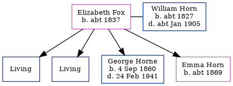

Elizabeth Horn (née Fox) c1837 -
[ Home ] | [ Calendar ] | [ Surnames Index ] | [ Errors ] | [ Family History ]Elizabeth Fox, the wife of William Horn (the three times great-uncle of Nigel Horne), was born in Margate, Kent, England c. 1837had 4 children, Thomas W, James John, George Charles and Emma.
During her life, she was living at Batty Street, Whitechapel, London, England on 7 Apr 18612; and at 11 Batty Street in Whitechapel on 2 Apr 18711.
Children
- George Charles was born on 4 Sept 1860
- Emma was born c. 1869
Citations
- 1871 England, Wales & Scotland Census - Findmypast (was age 33 and the wife of the head of the household)
- 1861 England, Wales & Scotland Census - Findmypast (was age 24 and the wife of the head of the household)
Media
1871 England, Wales & Scotland Census - GBC/1871/0002634247
1861 England, Wales & Scotland Census Transcription - GBC-1861-0001771508
Family Tree
Map
Generated by ged2site. Last updated on Jul 3, 2024
Known Issues
Birth date (abt 1837) has no citations